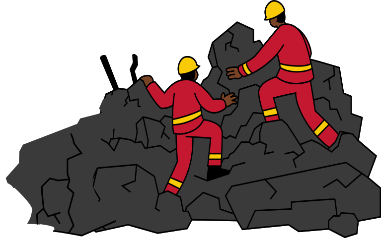
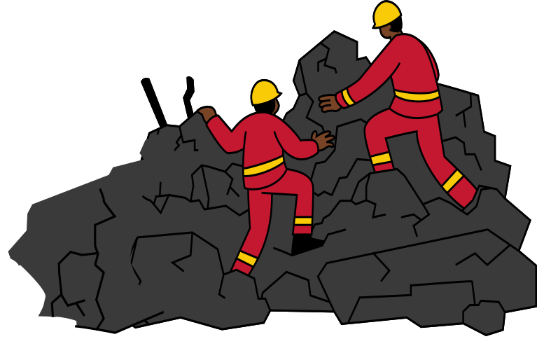

La mission derrière Guardian
Les catastrophes naturelles surviennent souvent sans avertissement, mettant chaque année des millions de vies en péril, en particulier celles des enfants,
des personnes âgées et des populations isolées. Guardian offre une solution complète pour renforcer la sécurité et la résilience face à ces crises.
Grâce à des alertes en temps réel, les utilisateurs peuvent anticiper les dangers imminents. Avec des guides interactifs et des exercices pratiques, ils apprennent à se préparer efficacement. Enfin, Guardian aide à se protéger en identifiant rapidement les zones sûres et en fournissant des conseils personnalisés pour faire face aux situations d’urgence.

 
